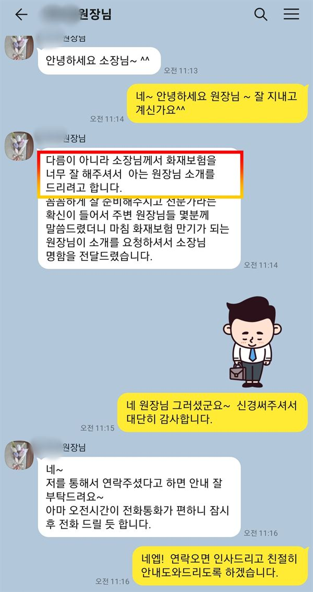
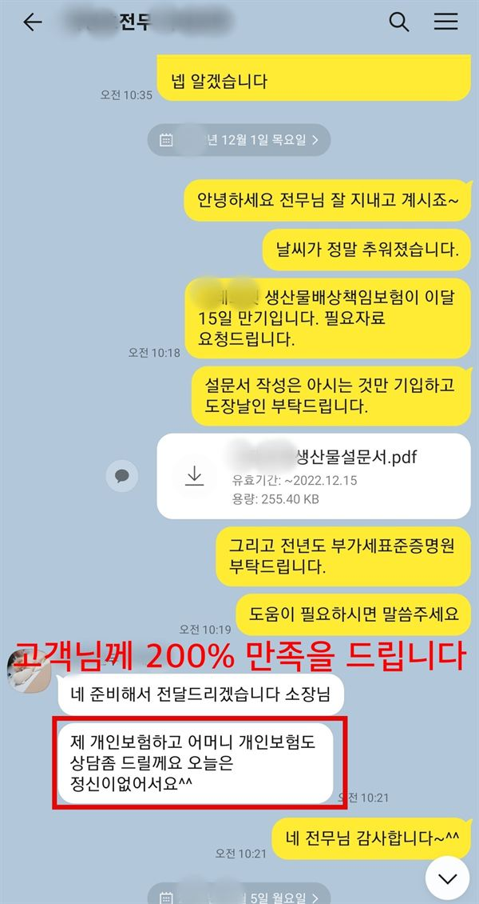

출판단지의 가장 큰 재산은 건물이 아니라 창고에 쌓인 책과 종이입니다. 일산 사무실에서 가까운 노영규 대표가 재고의 소유 관계부터 함께 정리합니다.
파주출판단지 안내
파주출판단지화재보험은 파주시 문발동의 파주출판문화정보국가산업단지에 입주한 출판사, 인쇄소, 서적 물류창고가 화재로 입는 건물·설비·재고 손해와 맡아 둔 재고에 대한 배상책임을 대비하는 화재보험입니다. 파주출판단지는 1997년 지정된 국가산단으로, 문화체육관광부가 소관하는 드문 산단입니다.
주요 업종은 출판, 인쇄·기록매체 복제, 창고·운송 서비스와 문화콘텐츠이고, 2026년 1분기 기준 825개사가 입주해 있습니다. 대형 서적 물류센터와 인쇄소가 모여 있어 종이와 책이 대량으로 쌓여 있다는 점이 다른 산단과 가장 다릅니다. 종이는 한번 불이 붙으면 쉽게 꺼지지 않고, 불을 끄는 과정에서 뿌린 물만으로도 재고 전체가 못 쓰게 됩니다.
파주소방서는 이 단지를 화재경계지구로 관리하고 있습니다. 출판단지 재고에서 특히 따져 볼 것은 소유 관계입니다. 물류창고에 쌓인 책은 여러 출판사의 것이고, 인쇄소에 있는 종이와 인쇄물도 발주한 출판사의 것인 경우가 많습니다. 창고 주인의 보험이 남의 재고까지 챙겨 주리라 기대하기 어려워, 맡긴 쪽과 맡은 쪽이 각자 무엇을 보험으로 챙기는지 확인해야 합니다.
이 위험이 현실이 된 사례가 있습니다. 2019년 11월 파주 월롱면의 한 배본사 창고에서 불이 나 책 약 50만 권이 탔는데, 배본사가 화재보험에 가입하지 않아 영세 출판사들이 보상받기 어려웠다고 보도됐습니다. 출판단지 밖에서 난 사고지만 출판 업계 전체에 위탁 재고의 보험을 다시 보게 한 사건입니다.
출판단지의 물류창고는 신간 출시와 반품이 한꺼번에 몰리는 시기에 재고가 크게 늘어납니다. 반품 도서는 창고에 오래 머물기도 해서, 재고 금액을 정할 때 새 책과 반품 도서를 나눠 파악해 두면 가입금액과 사고 뒤 손해 산정이 모두 정확해집니다.
2019.11 파주 월롱면(단지 밖) 배본사 창고 화재로 책 약 50만 권이 탔고, 배본사가 보험에 가입하지 않아 출판사들이 보상받기 어려웠다고 보도됐습니다. (경향신문)
주요 위험
종이는 불이 오래가고 소화수만으로도 전량 손상될 수 있어 재고 보장을 넓게 봅니다.
물류창고의 책은 출판사의 것, 인쇄소의 종이는 발주처의 것인 경우가 많습니다.
인쇄기와 잉크·용제는 화재 원인이 되기도 하고 고가 설비 손해로 이어집니다.
높이 쌓은 팔레트와 막힌 통로는 불의 확산을 부추기고 진화를 어렵게 합니다.
신학기와 연말처럼 책이 몰리는 시기를 기준으로 가입금액을 잡습니다.
출판사의 원고와 디자인 파일은 외부 백업이 가장 확실한 대비입니다.
※ 실제 보장 여부와 한도, 면책 사항은 가입하는 상품의 약관과 공장 현황에 따라 달라집니다.
방문 상담
파주출판단지는 일산 사무실에서 가깝습니다. 출판사, 인쇄소, 물류창고 각각의 입장에서 재고의 소유 관계와 보험 경계를 함께 정리합니다.
꼭 확인할 점검 항목
고객 후기




※ 실제 계약고객과 나눈 카카오톡 상담과 후기 일부이며, 개인정보는 가렸습니다.
지역 상담 Q&A
들어 두는 편이 안전합니다. 창고 주인의 보험이 맡은 책까지 보장한다는 보장이 없고, 창고가 보험에 가입하지 않은 사례도 있었습니다. 위탁 재고를 목적물에 포함할 수 있는지 검토합니다.
맡은 물건에 대한 배상책임이 생길 수 있습니다. 창고 운영자는 자기 재산 보험과 함께 수탁 재고에 대한 배상책임을 준비해야 합니다.
화재로 인한 손해에 소화 과정의 물 피해가 포함되는지는 약관에 따라 다릅니다. 종이 재고가 많은 곳은 가입 단계에서 꼭 확인해야 합니다.
인쇄소에 맡긴 종이와 인쇄물도 출판사의 재산이므로, 인쇄소를 목적물 소재지로 추가하거나 맡긴 재고를 보는 방법을 검토해야 합니다. 인쇄소의 보험만으로는 부족할 수 있습니다.
 MGF 베스트스토리텔러
MGF 베스트스토리텔러 고객 소개 후기
고객 소개 후기 지인 소개 후기
지인 소개 후기